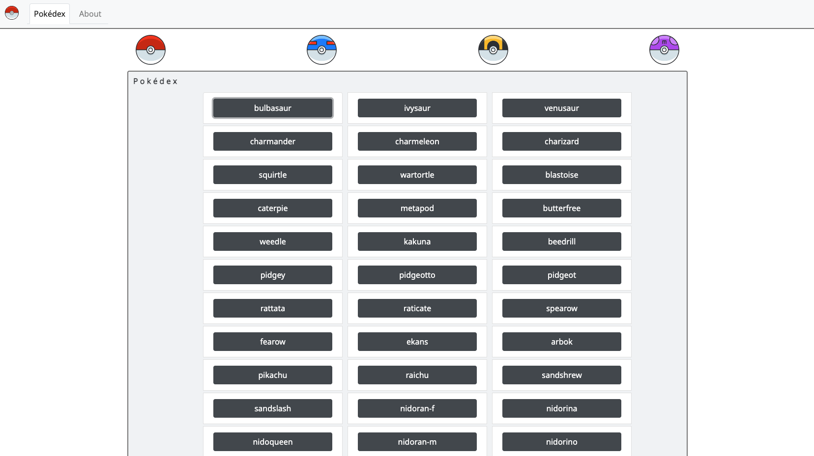

Pokedex App
Github LinkA small web application with HTML, CSS, and JavaScript that loads data from an external API and enables the viewing of data points in detail.
JavaScript built application allowing users to explore data about the original 150 pokemon. Using an external pokemon API I built an app that allows users to find information about any selected pokemon. I learned about how to interact with an API became familiar with reading documentation to learn how to interact with data.
I learned more about functions and manipulating the DOM, also about IIFE and global variables. This is when I got my first taste of building and getting excited about seeing the outcome of what I created as I built it.
- Load data from an external source (pokeDex api)
- View list of all items
- On user action (e.g., clicking on a list item), view details of that item.